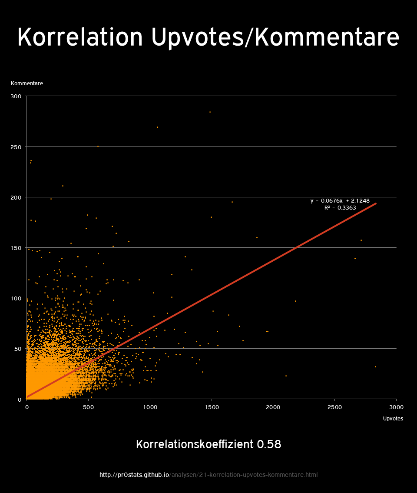

Annahmen
Informationen
Resultate
Methodik
Kritik
Korrelation Upvotes zu Kommentaren

¶
Resultate
Korrelationskoeffizient
0.57990
Formel für Trendgerade
y = 0.0676x + 2.1248
Bestimmtheitsmaß
R² = 0.3363
¶
Methodik
siehe
Hinweise zur Methodik
(Stichtag 17.08.2014, 18:51 Uhr)
Zeitraum
01/2007
bis
17/08/2014